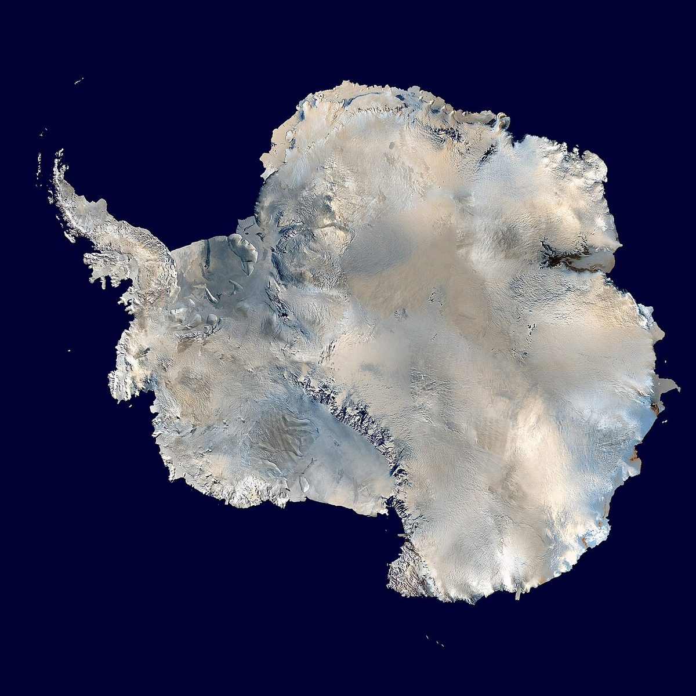

Not because it reflects the sky. Water itself is a filter, and it quietly throws away the red half of sunlight. The blue is what's left over.
The usual answer is that the ocean is blue because it reflects the sky. That is only a small part of the story — and you can prove it easily.
Dive just a few metres below the surface on a bright day, look down into deep water, and it is still blue. There is no sky down there to reflect. The blue is coming from the water itself.
Sunlight is a mixed pack of colours
White sunlight looks like one colour, but it is really a whole rainbow squeezed together. Each colour is a light wave of a different length. Red has the longest waves. Then come orange, yellow, green, and finally blue and violet, with the shortest waves of all.
Water does not treat all those waves equally. It is like a filter — or, as one ocean agency puts it, a sunlight filter that eats the red end of the rainbow first.

Water swallows the reds and lets the blues through
When light enters water, the colours with long waves are absorbed quickly. Within just a few metres down, most of the red and orange light has already been swallowed by the water. Yellow and green go next.
Blue light is different. Its short waves travel much deeper into seawater. Some of them bounce off water molecules and scatter back toward your eyes. Since blue is the colour left over after the reds have been eaten, deep, clear ocean water looks blue — and it is blue all the way down, not just at the surface.
That is also why underwater photographs taken without lights look washed out in blue and green. A diver deep underwater is swimming in blue light, because that is nearly all the light left.
Why the ocean can be green, brown, turquoise or black
If the ocean were nothing but pure water, it would be one simple colour everywhere. Instead it changes constantly, because lots of other things are floating in it.
- Silt and sand washed in from land can turn coastal water brown or murky.
- Phytoplankton — microscopic ocean plants — use green pigments to catch light, so water packed with them turns green.
- In shallow, clear water over pale sand, sunlight bounces off the bright bottom and mixes with the blue light above, giving the bright turquoise of tropical seas.
- Far from shore and very deep, so little light returns that most of the ocean is simply dark. No light reaches the deepest parts at all.
Even salt in the water adds a touch of extra scattering, though there is far too little of it to matter much.
So is it the sky or the water?
Both play a small part. The ocean does reflect the colour of the sky when the water is smooth and you look at a low angle. But that only matters near the surface.
The real reason the ocean is blue is simpler and stranger: water is very slightly blue, and there is a lot of it. Give water a few metres of depth and it quietly filters out the red half of sunlight, leaving blue behind. Look at a glass of water and you will see nothing. Look at a few thousand metres of it, and the colour has nowhere to hide.
Sources: Woods Hole Oceanographic Institution — Why is the ocean blue? · NOAA National Ocean Service — Why is the ocean blue? · Woods Hole Oceanographic Institution — Shedding Light on Light in the Ocean · Hong Kong Observatory — What is the colour of water?